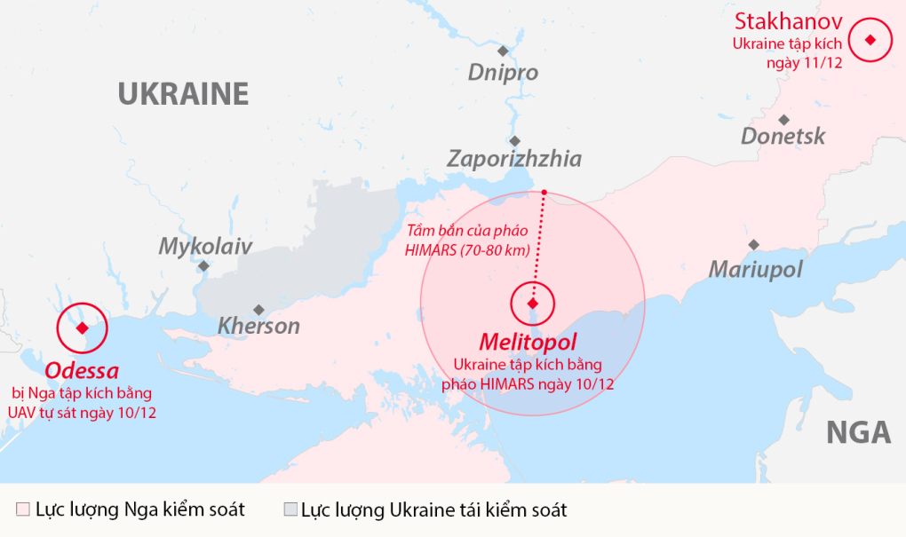
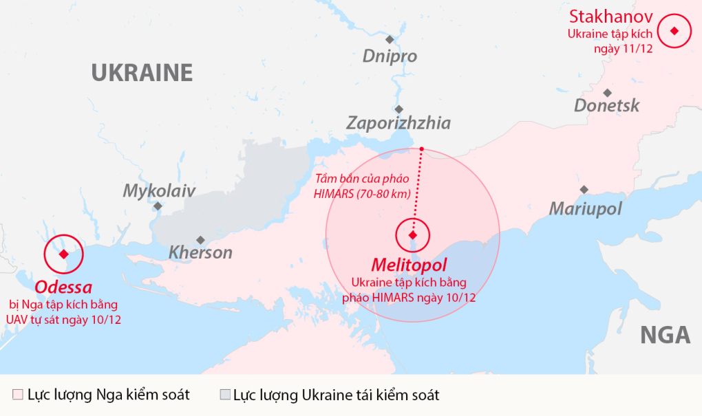

CHIẾN SỰ GIỮA NGA VÀ UKRAINA
Ukraine tập kích cơ sở nghi là doanh trại 'lính đánh thuê Nga'
Lực lượng Ukraine tập kích các địa điểm tại Melitopol và Stakhanov ở miền nam và miền đông, nơi họ cho là doanh trại và sở chỉ huy của công ty an ninh tư nhân Wagner.
Serhiy Gaidai, tỉnh trưởng Lugansk của Ukraine, ngày 11/12 cho biết lực lượng Ukraine tập kích một khách sạn là chỉ huy sở của các nhà thầu quân sự Wagner tại thành phố Stakhanov. Ông Gaidai cũng khẳng định lực lượng Nga hứng chịu tổn thất lớn trong vụ tập kích.
Phía Nga chưa bình luận về thông tin của tỉnh trưởng Ukraine.
Trước đó một ngày, các quan chức Nga tại Melitopol, tỉnh Zaporizhzhia, ngày 10/12 thông báo quân đội Ukraine sử dụng Pháo phản lực Cơ động cao (HIMARS) tập kích khu phức hợp nghỉ dưỡng và khách sạn ở ngoại ô thành phố.
Hai rocket HIMARS bị phòng không Nga bắn hạ, 4 quả còn lại đánh trúng mục tiêu và phá hủy hoàn toàn khu nghỉ dưỡng, khiến hai người thiệt mạng và 10 người bị thương.
Một số nguồn tin Ukraine cho biết khu nghỉ dưỡng bị tập kích tại Melitopol được các nhà thầu quân sự Wagner sử dụng. Tuy nhiên, truyền thông Nga dẫn lời nhân chứng cho biết chỉ có nhân viên khu nghỉ dưỡng có mặt tại cơ sở khi Ukraine tập kích, không có sự hiện diện của quân nhân hay quan chức Nga. Ukraine mở các đợt tấn công nhằm vào cơ sở nghi do lực lượng Wagner sử dụng sau khi quân đội Nga dùng máy bay không người lái (UAV) tập kích thành phố Odessa. Quân đội Ukraine ngày 10/12 tuyên bố bắn hạ 10 UAV, trong khi 5 chiếc khác đánh trúng các cơ sở năng lượng khiến khoảng 1,5 triệu người mất điện. "Tình hình tại tỉnh Odessa rất khó khăn", Tổng thống Volodymyr Zelensky thừa nhận. "Đó là các đòn tập kích vào chỗ hiểm yếu, do đó cần nhiều thời gian để khôi phục hoạt động cấp điện, không phải vài giờ mà là vài ngày". Tập đoàn an ninh tư nhân Wagner có khoảng 8.000 nhân sự và gần đây khai trương trụ sở tại St. Petersburg, Nga. Các nhà thầu quân sự Wagner, phương Tây coi là "lính đánh thuê Nga", từng hoạt động tại châu Phi, Trung Đông và thậm chí có thể từng xuất hiện tại Mỹ Latinh. Thành viên Wagner cũng tham chiến tại Ukraine bên cạnh quân đội chính quy Nga và dân quân của phe ly khai. Các tay súng Wagner được cho là chủ yếu thực hiện các nhiệm vụ nhỏ lẻ, rất khác với hoạt động quy mô lớn của quân đội Nga. 
Một số nguồn tin Ukraine cho biết khu nghỉ dưỡng bị tập kích tại Melitopol được các nhà thầu quân sự Wagner sử dụng. Tuy nhiên, truyền thông Nga dẫn lời nhân chứng cho biết chỉ có nhân viên khu nghỉ dưỡng có mặt tại cơ sở khi Ukraine tập kích, không có sự hiện diện của quân nhân hay quan chức Nga. Ukraine mở các đợt tấn công nhằm vào cơ sở nghi do lực lượng Wagner sử dụng sau khi quân đội Nga dùng máy bay không người lái (UAV) tập kích thành phố Odessa. Quân đội Ukraine ngày 10/12 tuyên bố bắn hạ 10 UAV, trong khi 5 chiếc khác đánh trúng các cơ sở năng lượng khiến khoảng 1,5 triệu người mất điện. "Tình hình tại tỉnh Odessa rất khó khăn", Tổng thống Volodymyr Zelensky thừa nhận. "Đó là các đòn tập kích vào chỗ hiểm yếu, do đó cần nhiều thời gian để khôi phục hoạt động cấp điện, không phải vài giờ mà là vài ngày". Tập đoàn an ninh tư nhân Wagner có khoảng 8.000 nhân sự và gần đây khai trương trụ sở tại St. Petersburg, Nga. Các nhà thầu quân sự Wagner, phương Tây coi là "lính đánh thuê Nga", từng hoạt động tại châu Phi, Trung Đông và thậm chí có thể từng xuất hiện tại Mỹ Latinh. Thành viên Wagner cũng tham chiến tại Ukraine bên cạnh quân đội chính quy Nga và dân quân của phe ly khai. Các tay súng Wagner được cho là chủ yếu thực hiện các nhiệm vụ nhỏ lẻ, rất khác với hoạt động quy mô lớn của quân đội Nga. 
-
về trang web :
trang web nay chuyên về cái bài báo kì lạ trên toàn thế giới cảm ơn bạn đã vào xem -
Liên hệ:
Auther: Phan Vỹ Kiệt.
Code:6251071050.
PhoneNumber:0937824006.
Gmail:phankiet24006@gmail.com